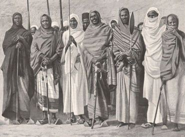

Somalia (Somali: Soomaaliya; aṣ-Ṣūmāl), officially the Federal Republic of Somalia (Somali: Jamhuuriyadda Federaalka Soomaaliya, Jumhūriyyat aṣ-Ṣūmāl al-Fideraaliya) and formerly known as the Somali Democratic Republic, is a country located in the Horn of Africa. The country was an important centre for commerce with the rest of the ancient world,[1][2] and according to most scholars,[3][4] it is among the most probable locations of the fabled ancient Land of Punt.[5][6] During the Middle Ages, several powerful Somali states and port towns dominated the regional trade, the Mogadishu Sultanate and Ajuran Sultanate both centered around the port town Mogadishu, but also the port towns of Barawe and Merca. In the late 19th century, through a succession of treaties with these kingdoms, the Italian colonial empire gained control of parts of the coast, and established the colony of Italian Somaliland.[7][8] In southern parts of Somalia, the Italians fought a decades-long war, dubbed the Banadir Resistance, with the Somalis around the port town of Merca. Italy acquired full control of the northeastern, central and southern parts of the territory after successfully waging a Campaign of the Sultanates against the ruling Majeerteen Sultanate and the Sultanate of Hobyo.[8] This occupation lasted until 1941 when it was replaced by a British military admin
In 1950, the Trust Territory of Somaliland under Italian administration was established as a United Nations Trusteeship, with a promise of independence after 10 years. British Somaliland, nominally independent as the State of Somaliland (now Somaliland) for four days, merged as planned with the trust territory in 1960. Together, they formed the independent Somali Republic under a civilian government, the Somali National Assembly, headed by Haji Bashir Ismail Yusuf.[9] The administration lasted until 1969, when the Supreme Revolutionary Council led by Mohamed Siad Barre, seized power in a bloodless coup and renamed the country the Somali Democratic Republic. In 1991, the Somali Civil War divided the entire country. Despite the establishment of the Interim, Transitional, and Federal governments, Somalia remains divided with Somaliland gaining de facto independence.
Somalia has been inhabited since at least the Paleolithic, when the Doian and Hargeisan cultures flourished.[10] The oldest evidence of burial customs in the Horn of Africa comes from cemeteries in Somalia dating back to the 4th millennium BC.[11] The stone implements from the Jalelo site in the north (about halfway between Berbera and Hargeisa) were also characterized in 1909 as important artefacts demonstrating the archaeological universality during the Paleolithic between the East and the West.[12][13]